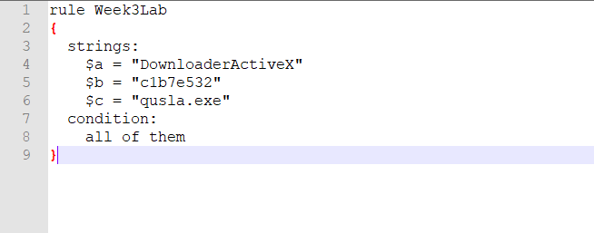
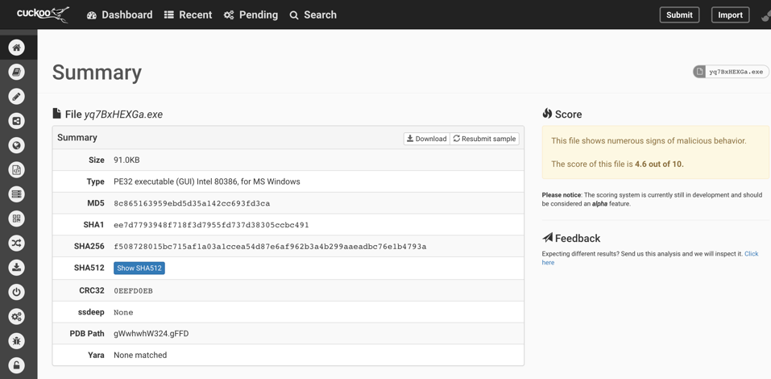

What does malware defense mean? Malware defense is the mechanism used to block malicious software from intruding and tampering with a systems components, such as sensitive data. In the past, I’ve wrote about what malware is and the techniques used to identify it. This article however will focus on how to defend against an attack.
An attack graph is essentially a representation of all the paths through a system in which an attacker can take to achieve their goal. There are four primary components of the attack graph:
The “first contact” stage represents how the malware gets onto the system. Examples include through external media such as a USB drive, visiting untrusted websites, and clicking on unsafe email attachments. “Local execution” refers to how the code is executed after it is on the machine. Examples include running look-a-like apps, running browser scripts, and running compromised features such as disk drives. The next part is where the malware establishes its presence. Since it doesn’t want to be deleted, it may blend in or hide on the system – such as with a realistic filename/timestamp. Or it can start sending false information to the operating system such as what processes its running and files its modifying. Finally, the last component “malicious activity” represents the objective. Obviously the overall goal is to cause damage to the host machine without being identified.
The next focus is on the methods of protection. Due to the increase of malware attacks in the cyber world, the need for cyber defense is greater than ever. However, a primary method of defense that is usually overlooked is technical education. Majority of malware attacks can be avoided simply if users are well aware of the vulnerabilities. This can range from understanding what kind of email attachments are harmful, what websites are considered safe, and other steps to safely traverse the web. Educating the user can significantly increase their chances of not getting infected, as prevention is the best medicine. Another protection method is layered protections. This resembles trying to catch malware at each layer of a user’s system, rather than at a single layer. The layers represented are:
YARA is a software tool primarily used for malware detection and research. Using YARA, one can create rules (descriptions) of malware families based on textual or binary patterns. A rule consists of a set of strings to be matched with and a ending Boolean condition.
Similar to YARA, Cuckoo is an automated malware analysis software. As mentioned earlier, the amount of malware attacks have been on the rise. Keeping track of them individually is becoming consequently difficult. Cuckoo offers automation which greatly helps with keeping track of the attacks/threats in today’s time. In particular, it can run malware on multiple VM’s and formulate a report with the results. Cuckoo monitors process creations on the VM and creates several logs with the analysis data. This can ultimately be helpful for figuring out what a malware is doing in an encapsulated environment.
